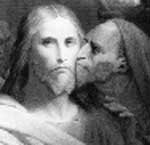

Aslında on iki havariden biri olan Yahuda İscariot, Hz. İsa’yı Romalı otoritelere ihbar etmesi ile ünlenmiştir. Yahuda, Hz. İsa’nın yakalanması ve çarmıha gerilmesine neden olan ihanetinin karşılığında otuz gümüş almıştı. İhbarcı, Hıristiyan teolojisinin en önemli kötü karakterleri arasında yer almaktadır.

Yahuda İscariot (soyadı büyük ihtimalle Latince katil anlamına gelen sicarius kelimesinden türetilmiştir) havarilerin mali işlerine bakıyordu. On iki havariden biri olduğu için yaşamı boyunca Hz. İsa’ya çok yakın olmuştu. “John İncili”nde fakirler için toplanan yardımları çalan bir hırsız olarak tasvir edilmektedir.
İncil’de anlatılanlara göre Hz. İsa ve takipçileri Hamursuz Bayramı sırasında Kudüs’e gelirler (MS 33). Tapınaktaki tefecilere saldırmaları, dönemin önde gelen kişilerini çileden çıkarır. Hz. İsa’yı tutuklamayı kafasına koyan Romalı vali Pontius Pilate ve yüksek rahip Joseph Caiaphas, Yahuda’ya rüşvet vermeyi kararlaştırırlar. Tutuklama, Gethsamane Bahçesi’ndeki son akşam yemeğinden sonra gerçekleşir. Havariler burada dua etmek için buluşmuşlardır. Yahuda, Hz. İsa’yı öperek askerlere işaret verir. Böylece ona bir öpücükle ihanet etmiş olur.
Yahuda’nın Hz. İsa’nın ölümündeki rolü, 2 bin yıl boyunca anti-semitik şiddetin önemli bir kaynağı olmuştur. Yahuda, Hz. İsa ve diğer havariler gibi Yahudiydi. Hz. İsa’nın çarmıha gerilmesini emreden Pontius Pilate ise Romalı bir pagandı. Ancak 1965’e kadar, Yahuda’nın ihaneti Roma Katolik Kilisesi tarafından Hz. İsa’nın öldürülmesinden dolayı tüm Yahudilerin suçlu olduklarının bir kanıtı olarak yorumlanmıştı (II. Dünya Savaşı sırasındaki Yahudi Soykırımı’ndan sonra 2. Vatikan Konferansı ile kilise tavır değişikliğine gitti. Buna göre Hz. İsa’nın ölümünden dolayı “bütün Yahudiler sorumlu tutulamazdı.”)
İncil’de Yahuda’nın başına gelenlerle ilgili çelişkili ifadeler vardır. Matthew’da, Juda’nın çok utandığı ve rüşvet olarak aldığı gümüşü geri verip kendini astığı söylenir (günümüzde Juda ağacı olarak bilinen bir ağaca asmıştır kendini). Luka İncili’nin devamı olan “Elçilerin İşleri” kitabında ise parayı bir tarla almak için kullandığı ve daha sonra kendini öldürdüğü ifade edilir.
Ek Bilgiler
1- “Yahuda İncili”, Hz. İsa’nın ölümünü Juda’nın gözünden anlatır. 1970’li yıllarda Mısır’da bir mağarada bulunmuş, 2006 yılında yayınlanmıştır. Bu İncil’de Juda’nın ihaneti, kutsal görevin yerine getirilmesi ve Hz. İsa’nın insanlığı kurtarması için gerekli olan bir adım olarak gösterilir.
2- Yahuda, Hz. İsa’nın ölümü ile ilgili bir rock operası olan Süperstar İsa’da İngiliz şarkıcı Murray Head (1946-) tarafından canlandırılmıştır. Opera Andrew Lloyd Webber (1948-) ve Tim Rice (1944-) tarafından 1971 yılında yazılmıştır.
3- Martin Scorsese (1942-) tarafından yönetilen tartışmalı film The Last Temptation of Christ’ta (1988) Juda’yı Harvey Keitel (1939-) canlandırmıştır. Film kimi Hıristiyan grupları tarafından Juda’yı pozitif bir figür olarak gösterdiği ve Hz. İsa’nın Mary Magdalane ile evlenmeyi hayal ettiğini ileri sürdüğü iddiasıyla sert bir biçimde eleştirilmiştir.